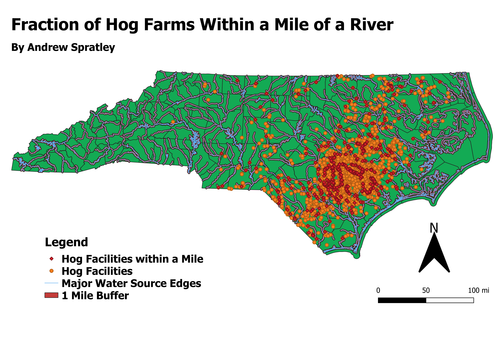

The data utilized consists of permitted animal facilities gathered from the North Carolina Department of Environmental Quality. This shows all the different permitted facilities and does not limit to just Swine, so the data of swine was selected through a attribute filter in QGIS. The overall dataset includes many other potential sources of waste.
Link to Swine Data Link to GeoJSON of Swine LocationsThe data obtained for the water boundaries is also from the NCDEQ. It can be found at the following link.
Water Source Data Utilizing the buffer tool, I was able to develop a buffer that was a mile wide around each edge to show a simple danger zone for contamination. Obviously there might be many other smaller bodies of water that could be excluded, but these water sources would be the most susceptible to damage as many of them are rivers that would not only affect those in the surrounding area, but also those that are downstream. Using the intersect tool, I used the input as the Swine Facility points and the overlay as the river buffer. Then the tool generated a list of points that are within the buffer region and allowed me to compare the difference. Out the 2248 location that are listed as Swine facilities, there are 504 that are within a mile of a river. Currently, NC State law designates that places where Swine feces may be located must be at least 75 feet away (Source) and this seems like a small distance compared to the potential damage that swine feces can cause.